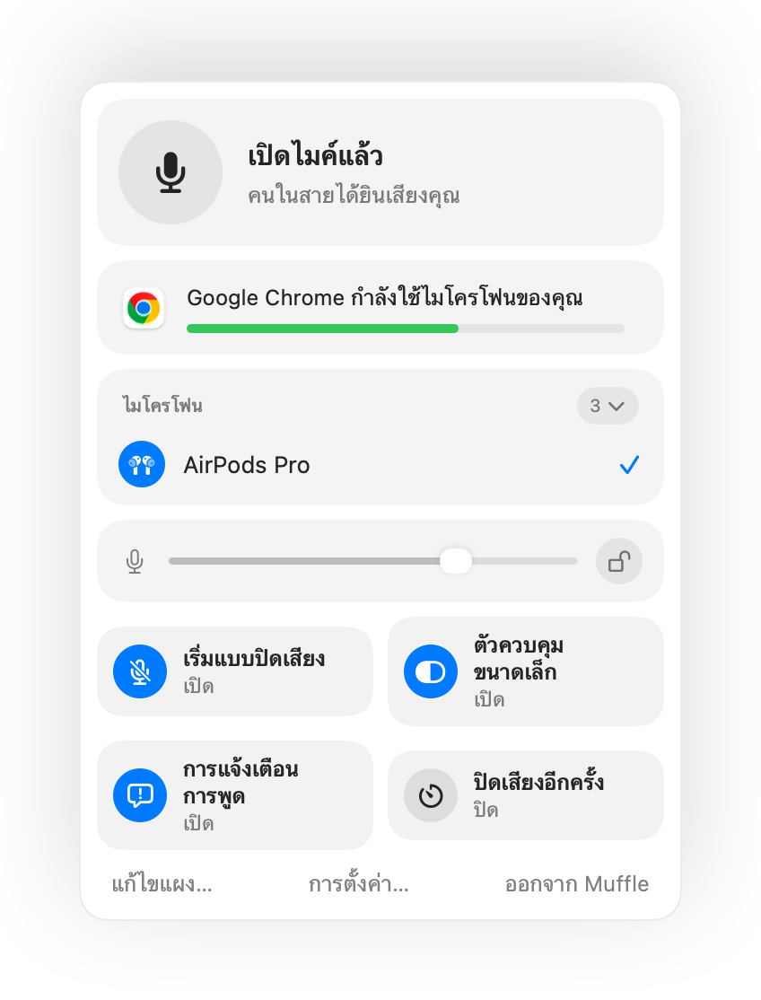
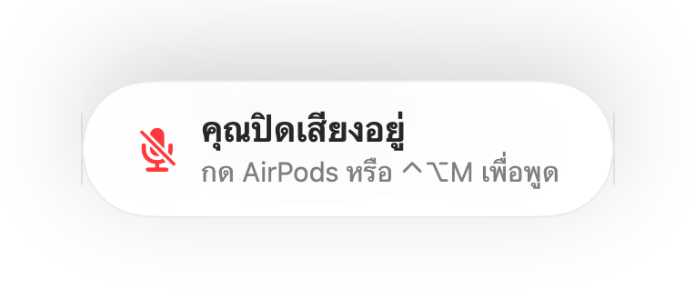
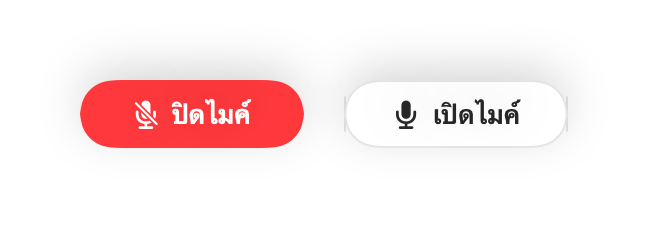
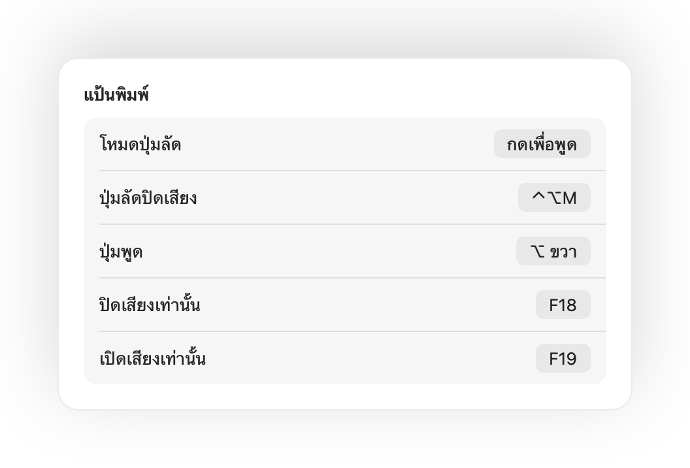
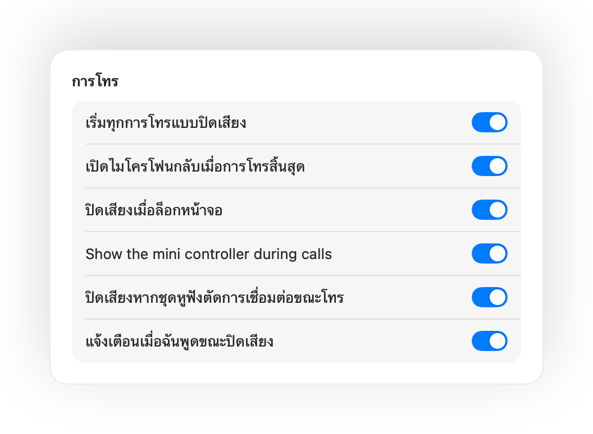

กด AirPods เพื่อปิดเสียง
ขณะโทร ให้กดที่ก้านหนึ่งครั้งเพื่อปิดเสียง และกดอีกครั้งเพื่อเปิดเสียง ใช้งานได้แม้กระทั่งใน Chrome ที่ Google Meet และการโทรบนเว็บมักไม่ตอบสนองต่อการกด AirPods
Muffle สำหรับ Mac
กด AirPods หรือกดปุ่มลัดแป้นพิมพ์เพียงปุ่มเดียว Muffle จะปิดไมโครโฟนโดยตรง ทำให้ Google Meet, Zoom, Teams, Slack และทุกแอปไม่ได้ยินเสียงใดๆ
ทดลองใช้ฟรี 3 วัน ซื้อครั้งเดียว ไม่มีการสมัครสมาชิก สำหรับ macOS 14 Sonoma ขึ้นไป
คลิกปุ่ม กด AirPods ของคุณ หรือใช้ปุ่มลัด Muffle จะปิดไมโครโฟนโดยตรง ทุกแอปจึงได้ยินแต่ความเงียบ
ปิดเสียง เลือกไมโครโฟน ล็อกระดับเสียง และเปิดหรือปิดฟีเจอร์ต่างๆ ได้โดยตรงจากแถบเมนู

ปุ่มปิดเสียงส่วนใหญ่จะปิดเสียงเพียงแอปเดียว แต่ Muffle จะปิดเสียงที่ตัวไมโครโฟนโดยตรง ทำให้ทุกแอปบน Mac ของคุณเงียบสนิท
ขณะโทร ให้กดที่ก้านหนึ่งครั้งเพื่อปิดเสียง และกดอีกครั้งเพื่อเปิดเสียง ใช้งานได้แม้กระทั่งใน Chrome ที่ Google Meet และการโทรบนเว็บมักไม่ตอบสนองต่อการกด AirPods
เริ่มพูดขณะปิดเสียงแล้ว Muffle จะเตือนคุณทันที ก่อนที่คุณจะพูดอธิบายยาวเหยียดโดยที่ไม่มีใครได้ยิน

Control-Option-M ปิดเสียงได้จากทุกที่ แม้สายจะอยู่ในแท็บพื้นหลัง กดค้างไว้เพื่อพูดขณะปิดเสียง แล้วปล่อยเพื่อปิดเสียงอีกครั้ง
ปุ่มลอยขนาดเล็กจะแสดงสถานะไมโครโฟนของคุณระหว่างการโทร คลิกเพื่อสลับปิดหรือเปิดเสียง

เลือกการทำงานของปุ่มลัดได้ตามต้องการ แตะเพื่อสลับ กดค้างเพื่อพูด หรือกดค้างเพื่อปิดเสียงชั่วขณะเมื่อต้องการไอ เพิ่มแป้นแยกสำหรับปิดเสียงและเปิดเสียง หรือกดปุ่มเดียวค้างไว้ เช่น ⌥ ขวา หรือปุ่มเมาส์เพิ่มเติม

เปิดเสียงเพื่อพูดเพียงประโยคเดียวใช่ไหม หากคุณเงียบไปตามเวลาที่เลือกไว้ Muffle จะปิดเสียงคุณอีกครั้ง โดยจะนับเฉพาะเสียงพูดของคุณเท่านั้น ไม่รวมเสียงพิมพ์หรือเสียงรบกวนรอบข้าง
เมื่อใช้ AirPods ในห้องที่เงียบ Muffle จะแนะนำไมโครโฟนของ Mac เพื่อให้ AirPods เล่นเสียงการโทรด้วยคุณภาพเต็มรูปแบบ หากเริ่มมีเสียงดัง แอปจะแนะนำไมโครโฟนของ AirPods

Chrome, Zoom และ Teams มักปรับระดับเสียงไมโครโฟนเอง เพียงล็อกระดับเสียงไว้ Muffle จะปรับคืนค่าเดิมให้ทันที
เริ่มทุกการโทรแบบปิดเสียง เปิดไมโครโฟนกลับเมื่อการโทรสิ้นสุด และปิดเสียงทันทีเมื่อคุณล็อกหน้าจอ Mac

หากหูฟังหลุดการเชื่อมต่อระหว่างโทร Muffle จะปิดเสียงทันทีก่อนที่สายจะสลับไปใช้ไมค์ในตัว Mac จนได้ยินเสียงรอบห้อง
ปิดเสียงได้จากแอปคำสั่งลัด, Siri, Stream Deck, Raycast หรือปุ่มในศูนย์ควบคุม
แสงเรืองสีเขียวหรือสีแดงรอบขอบหน้าจอ ไอคอนแถบเมนูแบบมีสี ปุ่มลอย และเสียงที่คุณเลือกปิดสำหรับแต่ละไมโครโฟนได้ เปิดใช้งานรูปแบบที่คุณชอบได้ตามต้องการ
Muffle จะไม่มีการบันทึก จัดเก็บ หรือส่งเสียงใดๆ ทั้งสิ้น ทำหน้าที่เพียงเปิดปิดไมโครโฟนและตรวจวัดระดับเสียงเท่านั้น ไม่ต้องมีบัญชี ไม่มีการวิเคราะห์ข้อมูล และไม่มีการติดตามใดๆ
ติดตั้ง Muffle จาก Mac App Store และอนุญาตให้เข้าถึงไมโครโฟน
เข้าร่วมการโทรในแอปใดก็ได้ตามปกติ
กด AirPods ของคุณ กด Control-Option-M หรือคลิกไอคอนในแถบเมนูเพื่อปิดเสียง
ได้แน่นอน Chrome จะไม่ส่งสัญญาณการกดปิดเสียงของ AirPods ไปยังการโทรบนเว็บ Muffle จึงรับสัญญาณนั้นมาปิดเสียงไมโครโฟนโดยตรง และใช้งานได้กับการโทรในแท็บเบราว์เซอร์ทุกประเภทเช่นกัน
แอปโทรของคุณอาจยังคงแสดงว่าไมโครโฟนเปิดอยู่ เนื่องจาก Muffle สลับปิดไมโครโฟนโดยตรงแทนที่จะกดปุ่มในแอป แต่คนในสายจะไม่ได้ยินเสียงของคุณอย่างแน่นอน ทั้งนี้ไอคอน Muffle ในแถบเมนูจะเปลี่ยนเป็นสีแดงขณะที่คุณปิดเสียง
AirPods Pro, AirPods รุ่นที่ 3 ขึ้นไป และ AirPods Max รวมถึง Beats รุ่นที่รองรับการควบคุมการโทร ส่วนปุ่มลัดแป้นพิมพ์และแถบเมนูสามารถใช้งานได้กับไมโครโฟนทุกรุ่น
ได้ Muffle ใช้งานได้กับทุกแอปบน Mac ที่ใช้ไมโครโฟน ทั้งแอปเดสก์ท็อปและการโทรผ่านเบราว์เซอร์
ไม่มี ทดลองใช้ทุกฟีเจอร์ฟรี 3 วัน หลังจากนั้นปลดล็อก Muffle ด้วยการซื้อครั้งเดียว
macOS จะส่งสัญญาณการกด AirPods ไปยังแอปที่ใช้ไมโครโฟนอยู่เท่านั้น Muffle จึงต้องเปิดการเชื่อมต่อแบบไร้เสียงไว้ระหว่างการโทร โดยไม่มีการบันทึกเสียงใดๆ ทั้งสิ้น
Muffle จะเปิดไมโครโฟนกลับให้ทันทีเมื่อออกจากแอป คุณจึงไม่ต้องกังวลว่าไมค์จะดับค้าง
macOS 14 Sonoma ขึ้นไป สำหรับปุ่มในศูนย์ควบคุมต้องใช้ macOS 26 ขึ้นไป
มี เพียงเลือก กดเพื่อพูด ในการตั้งค่า แล้วกดปุ่มลัดค้างไว้เพื่อพูด หรือจะกดแป้นเดี่ยวค้างไว้ก็ได้ เช่น ⌥ ขวา หรือ fn ตลอดจนปุ่มเมาส์เพิ่มเติม
เมื่อการโทรใช้ไมโครโฟนของ AirPods ตัวหูฟังจะสลับเข้าสู่โหมดการโทรซึ่งให้คุณภาพเสียงที่ต่ำลง ในห้องที่เงียบ Muffle จะแนะนำให้ใช้ไมโครโฟนของ Mac แทน เพื่อให้ AirPods เล่นเสียงด้วยคุณภาพเต็มรูปแบบอยู่เสมอ
ไม่เลย Muffle ตรวจจับเสียงพูดด้วยการวิเคราะห์เสียงบนอุปกรณ์ของ Apple จึงนับเฉพาะเสียงพูดเท่านั้น เสียงพิมพ์ เสียงคลิก และเสียงรบกวนรอบข้างจะไม่ถูกนับ และไม่มีการบันทึกเสียงใดๆ ทั้งสิ้น
คำตอบสั้นๆ ที่นำไปใช้ได้จริงสำหรับการปิดเสียงไมโครโฟนบน Mac ในทุกแอป
ทดลองใช้ Muffle ฟรี 3 วัน